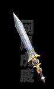
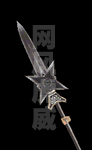
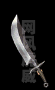
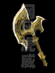
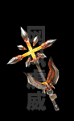
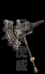

十大神器活动及相关地图
铸造系统：全新装备铸造系统：除四格、勋章外全部可以铸造永久增加属性。
增加各种铸造宝石用来铸造装备提高属性，所有铸造宝石在梦幻冰宫内可以获得。
商铺系统：玩家可以在任何时候打@帮助，或者对面没有怪物和玩家的情况下点交易就会看到商城系统，可以在商城买到一些特殊道具和药品。商城内的物品是用点卷来购买的。
最新推出神器地图，在盟重土城340 345与名剑老人对话，进入条件是需要20点能量值，同时官方将推出十大神器。
相关图片和属性：
第十名——承 影:（暗藏：吸血）

属性：准5 攻击10-35 魔法10-22 需要魔法力69佩带
承影是一把精致优雅之剑 ，乃一把有影无形的长剑。
远古的一个黎明，天色黑白交际的一瞬间，一双手缓缓扬起。
双手合握之中是一截剑柄，只有剑柄不见长剑剑身，相传剑影只存片刻，就随着白昼的来临而消失
第九名——纯 钧:（暗藏：吸血）

属性：准5 攻击15-40 道术10-22 需要精神力69佩带
纯均是一把尊贵无双之剑。
铸剑大师欧冶子承天之命呕心沥血与众神铸磨十载此剑方成。剑成之后，众神归天，赤堇山闭合如初，若耶江波涛再起，欧冶子也力尽神竭而亡，这把剑便成绝唱。
第八名——鱼 肠:（暗藏：吸血）

属性：准确5 攻击20-56 需要89点攻击佩带
鱼肠剑是一把勇绝之剑 。
专诸刺杀之时，面前有三层狻猊铠甲。第一层穿透，第二层穿透，穿透第三层时，鱼肠剑发现自己已变成了断剑。剑断，然而杀气未断。鱼肠剑依旧向前，挺进了王僚的心脏。
第七——莫 邪:（暗藏：麻痹）

属性：准9 攻击25-50 道术20-34 需要精神力89佩带
干将、莫邪是两把剑，但是没有人能分开它们。干将、莫邪是两个人，同样，也没有人能将他(她)们分开。干将是雄剑，莫邪是雌剑。干将是丈夫，莫邪是妻子。干将很勤劳，莫邪很温柔。干将、莫邪是一把挚情之剑。
第六名——干 将:（暗藏：麻痹）

属性：准确9 攻击30-72 需要119点攻击佩带
干将、莫邪是两把剑，但是没有人能分开它们。干将、莫邪是两个人，同样，也没有人能将他(她)们分开。干将是雄剑，莫邪是雌剑。干将是丈夫，莫邪是妻子。干将很勤劳，莫邪很温柔。干将、莫邪是一把挚情之剑。
第五名——七星龙渊:（暗藏：麻痹）

属性：准9 攻击20-45 魔法20-31 需要魔法力89佩带
七星龙渊是一把诚信高洁之剑。这把剑传说是由欧冶子和干将两大剑师联手所铸。欧冶子和干将为铸此剑，凿开茨山，放出山中溪水，引至铸剑炉旁成北斗七星环列的七个池中，是名“七星”。剑成之后，俯视剑身，如同登高山而下望深渊，飘渺而深邃仿佛有巨龙盘卧。是名“龙渊”。
第四名——泰 阿:

属性：准11 攻击30-65 道术25-45 需要精神力109佩带
泰阿剑是一把威道之剑。欧冶子和干将两大剑师说泰阿剑是一把诸侯威道之剑早已存在，只是无形、无迹，但是剑气早已存于天地之间，只等待时机凝聚起来，天时、地利、人和三道归一，此剑即成。
第三名——赤 霄:

属性：准11 攻击30-60 魔法23-35 需要魔法力109佩带
赤霄剑是一把帝道之剑。是一把饰有七彩珠、九华玉的寒光逼人、刃如霜雪的宝剑，剑身上清晰镌刻着两个篆字：赤霄。平时形如废铁，唯遇真龙帝王之人，方显真型。
第二名——湛 泸:

属性：准确11 攻击40-85 需要139点攻击佩带
湛泸剑是一把仁道之剑。更是一只眼睛。湛泸：湛湛然而黑色也。这把通体黑色浑然无迹的长剑让人感到的不是它的锋利，而是它的宽厚和慈祥。它就象上苍一只目光深邃、明察秋毫的黑色的眼睛，注视着君王、诸侯的一举一动。欧冶子铸成此剑时，不禁抚剑泪落，因为他终于圆了自己毕生的梦想：铸出一把无坚不摧而又不带丝毫杀气的兵器。所谓仁者无敌。
第一名——轩辕夏禹斩:

属性：准13 攻击45-92 魔法30-47 道术30-47 需要等级70佩带 麻痹属性
轩辕夏禹剑是一把圣道之剑 。众神采首山之铜为黄帝所铸，后传与夏禹。剑身一面刻日月星辰，一面刻山川草木。剑柄一面书农耕畜养之术，一面书四海一统之策。勇气、智慧、仁爱……一切归于两个字：圣道。
最新推出爆击装备-天鸣首饰。
天鸣头盔:

属性：防御9-11魔防7-9 攻击6-12 魔法6-12 道术6-12 需要等级81佩带
天鸣项链:
属性：魔法躲避10% 幸运1 攻击8-18 魔法8-18 道术8-18 需要等级81佩带
天鸣手镯:
属性：防御5-7魔防5-7 攻击6-13 魔法6-13 道术6-13 需要等级81佩带
天鸣戒指:

属性：防御2-5魔防2-5 攻击6-18 魔法6-18 道术6-18 需要等级81佩带
以上装备每佩带一个增加一点属性，1*1的计算，如果带3样天鸣装备
就是3*3是9点暗藏攻击属性，比如现在玩家A是100点攻击，身上带有
5样天鸣装备，那么他的实际攻击就是100+5*5，就是125点攻击，
玩家佩带的越多暗藏攻击数值越大。
爆出地图为利器堂、名器堂和神器堂的怪物身上获得。
虎威传奇官方游戏